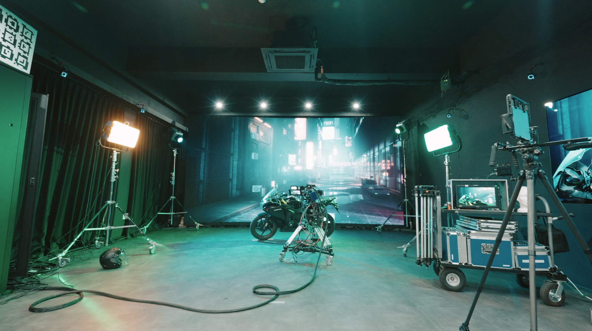

장면을 분석하다
이야기와 연출 의도를 공간, 캐릭터, 카메라, 조명의 언어로 구체화합니다.
Virtual Production Training Program
프리비즈부터 ICVFX 촬영까지. 실제 제작 환경에서 배우고 실험하며, 아이디어가 한 장면으로 완성되는 전 과정을 경험합니다.

01 · Our Vision
프리비즈는 촬영 전에 장면을 설계하고 검증하는 핵심 단계입니다. 우리는 도구 사용법에 머무르지 않고, 장면 분석부터 구현까지 이어지는 제작 사고를 훈련합니다.
가상공간의 미장센, 배우의 움직임, 카메라 동선과 조명을 하나의 장면 안에서 반복해서 검토합니다. 이 과정에서 쌓인 역량은 ICVFX, 디지털 에셋, 가상 프로덕션의 다양한 직무로 확장됩니다.
이야기와 연출 의도를 공간, 캐릭터, 카메라, 조명의 언어로 구체화합니다.
촬영 전에 선택을 시각화하고 반복 검증해 팀이 공유할 수 있는 기준을 만듭니다.
프리비즈의 설계를 실제 스테이지, 장비, 협업 워크플로와 연결합니다.
02 · Educational Infrastructure
프리비즈를 설계하는 NEXT LAB과 실제 촬영을 수행하는 EDGE STAGE가 연결되어 교육·실습·실증으로 이어지는 제작 동선을 제공합니다.
LED WALL · ICVFX · REAL-TIME ENGINE
LED 월, 실시간 렌더링, 카메라 트래킹, 라이팅 연동을 활용해 가상 배경 합성과 인카메라 VFX 제작을 경험하는 교육용 버추얼 스튜디오입니다.
PREVIS · DIGITAL ASSET · VFX
고성능 워크스테이션을 기반으로 실시간 씬 구성, 카메라 동선, 가상 세트와 디지털 에셋을 제작하는 프리비즈 교육 공간입니다.
03 · Programs
산업을 처음 만나는 청소년부터 포트폴리오와 전문 직무를 준비하는 대학생까지, 이해·체험·제작의 깊이를 달리해 설계합니다.
학교 방문형 특강으로 핵심 기술, 제작 사례, AI 활용, 진로와 직무를 소개합니다.
3D 스캔, 언리얼 프리비즈, 모션캡처, VCam, ICVFX 촬영과 편집을 하루 동안 연결합니다.
언리얼 엔진 입문부터 월드 구성, 라이팅, 메타휴먼, 퍼포먼스 캡처, VCam과 팀 프로젝트까지 학습합니다.
고급 라이팅, Control Rig, 모션 블렌딩, 시퀀서 연출과 개인 프로젝트를 통해 포트폴리오를 완성합니다.
LED Stage, 카메라 트래킹, 미디어 서버, 포토스캔, 컬러 매니지먼트와 실제 팀 촬영을 다룹니다.
Virtual Production in Action
기획부터 촬영과 결과물 완성까지, 버추얼 프로덕션 교육과정의 실제 현장을 영상으로 확인해 보세요.
YouTube에서 보기Production Pipeline
장면 분석
가상환경 제작
모션·연기 캡처
카메라·연출 검증
ICVFX 촬영
편집·상영·피드백
04 · Program Archive
교육생들은 팀과 개인 프로젝트를 통해 가상공간, 캐릭터, 카메라와 움직임을 직접 설계하고 한 편의 프리비즈 영상으로 완성했습니다.